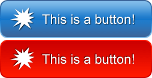

Samla flera bilder i en fil.
Lämpligt för ikoner.
Knappar kan ha vanlig och hover bakgrund i samma sprite.
En request istället för X.
Sparar bandbredd.
Mycket enklare att göra responsiv.
Kanske inte behöver alla bilder?
Kräver lite mer tänk än att ha enkla bilder.
Kan endast upprepas i en dimension.
Ska de kunna upprepa sig?
Alla bilder i en fil med motsatt håll.
Vad är den största storleken?
Vilket hörn?
Som att lägga en kartong med ett fyrkantigt hål över spritesheetet.
Negativ offset, "flytta upp" bilden till hålet.
.microsoft,
.wp,
.facebook,
.github,
.twitter,
.linkedin,
.youtube,
.desktop,
.code {
background-image: url('../images/icons/tiles.png');
background-repeat: no-repeat;
}
.microsoft {background-position:0px 0px}
.wp{background-position: 0px -128px;}
.facebook{background-position:0px -256px;}
.github{background-position:0px -384px;}
.twitter{background-position:0px -512px;}
.linkedin{background-position: 0px -640px;}
.youtube{background-position: 0px -768px;}
.desktop {background-position: 0px -896px;}
.code {background-position: 0px -1024px;}
#spritebtn {
width:254px;
height:64px;
background:url('./images/btn-sprite.png');
}
#spritebtn:hover {
background-position: 0 -67px;
}

Enkelt att ändra en enda url istället för en per ikon.
Beror på att spritesen får samma utrymme trots att de är mindre.
@media (min-width:1200px)
{
.microsoft,
.wp,
.facebook,
.github,
.twitter,
.linkedin,
.youtube,
.desktop,
.code {
background-image: url('../images/icons/tiles-large.png')
}
}
@media (min-width:768px) and (max-width: 979px)
{
.microsoft,
.wp,
.facebook,
.github,
.twitter,
.linkedin,
.youtube,
.desktop,
.code {
background-image: url('../images/icons/tiles-tablet.png')
}
}
Ett av de största problemen i responsiv design